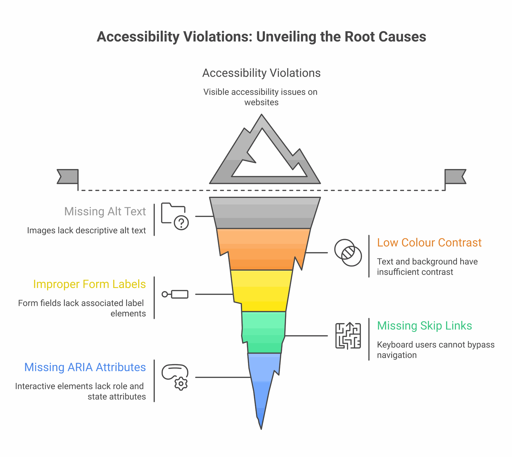

The day we discovered our website was lying to us
Last week, we shipped a continuous integration fix to ImpactMojo. It was a small two-line change to a workflow file. We expected nothing visible to happen. Instead, the fix uncovered 393 accessibility violations across our public website that had been hidden in plain sight for months.
Every pull request before that fix had been silently passing accessibility checks. Every dashboard said "all green." Every commit said "tests passing." But the underlying tools — axe-core and pa11y-ci, the two industry-standard accessibility scanners — were producing failure reports that the workflow was misreading as successes. The bug was a single character: $? after a piped command captures the exit code of the last command in the pipe (in our case, tee, which always returns zero), not the upstream command we cared about. The fix was ${PIPESTATUS[0]}.
One small character. Hundreds of hidden bugs. This is the story of what we found, what we fixed, and what we learned about the gap between "technically accessible" and "actually accessible."
What WCAG 2.1 AA actually means
The Web Content Accessibility Guidelines (WCAG) 2.1 Level AA are the international standard for web accessibility. They are the floor, not the ceiling — the minimum that lets people with low vision, dyslexia, motor impairments, screen readers, and many other conditions actually use a website. They are also what most government partnerships, UN agencies, and educational institutions require their digital partners to meet.
The rules are concrete. Text must have a contrast ratio of at least 4.5:1 against its background (3:1 for large text). Every form field needs a label. Every interactive element needs a name that screen readers can announce. Links must be distinguishable from surrounding text without relying on colour alone. Headings must be properly nested. Anchor links must point to elements that exist.
None of this is glamorous. But for the roughly 15 percent of users who depend on these guarantees to read your content at all, it is the difference between a website that includes them and a website that does not.
The eight-pass journey from 393 to zero
After we fixed the workflow bug and could finally see the truth, we started working through the violations. Here is what the trajectory looked like, pass by pass, on a single afternoon:
- Pass 1 (393 → 77 errors): One CSS line on the dataverse page. The "Visit" button on every dataset card was sky-500 with white text — a contrast ratio of 2.99:1, well below the 4.5:1 floor. There were 265 cards on the page, so a single colour change cleared 271 violations in one shot.
- Pass 2 (77 → 21): Form fields without labels, JavaScript-injected modal search inputs without aria-labels, and a token bump for the dojos page (teal-400 to teal-700).
- Pass 3 (21 → 14): A workaround for the way pa11y handles CSS gradients: it doesn't parse them, so it sees a button with
background: linear-gradient(...)as havingbackground-color: transparentand computes white-text-on-white as 1:1 contrast. We added explicitbackground-colorfallbacks to twenty-seven gradient buttons across three pages. - Pass 4 (14 → 1): The biggest win, and the most embarrassing root cause. A single line of JavaScript in our theme switcher was inverted — it checked
prefers-color-scheme: lightand defaulted to dark mode whenever the check returned false. In headless browsers (which is what our test runner uses), no colour scheme is set, so every accessibility test was running in dark mode. This forced bad token combinations across forty-one pages. Inverting the check fixed almost every remaining issue. - Pass 5 (1 → 0): A single text colour on a contact button. Done.
Eight passes. Roughly four hours of focused work. From 393 violations to zero, on all thirteen pages our scanner tests.

The five lessons that travel
1. Your CI is probably lying to you about something
The deepest bug was not an accessibility violation. It was the fact that we had spent months adding features and shipping pull requests while believing our accessibility tests were passing. The workflow was structured in a way that was easy to miss in code review (a piped command, an exit code check, a wrapper script that posted "All pages passed" if it took the wrong branch). The lesson is not "be more careful" — it is "assume your green checks might be lying, and verify the failure path works." We now have a test that intentionally introduces a violation and confirms CI catches it.
2. Most accessibility bugs are caused by a small number of root causes
When you see "393 violations," it sounds like a project. But 271 of those were the same CSS class on the same page repeated across 265 cards. Another 70-ish came from a single bad line in a theme script that affected 41 pages. By the end, fewer than 50 violations were truly unique. The work is not "fix 393 things" — it is "find the 5 patterns that cause 393 things."
This is why automated scans are so valuable. Not because they catch everything (they do not — see below), but because they cluster errors so you can see the patterns.

3. Brand colours and accessibility are in tension, and it takes design work to resolve it
Our brand uses sky-500 (#0EA5E9) prominently. As a button background with white text, it gives 2.99:1 contrast. As body text on a white background, it gives 2.77:1. Both fail WCAG AA. So do indigo-500 (4.21:1 as text), emerald-500 (2.54:1), and amber-500 (2.15:1). These are the default "vibrant" choices in almost every modern design system, including Tailwind, Material, and Ant Design.
The fix is not to abandon the brand. It is to define two versions of every brand colour: a "decorative" version (used for backgrounds, borders, focus rings, icons) and a "text" version that is two or three steps darker on the same hue. Sky-500 stays for the gradient backgrounds; sky-800 (#075985) takes over for any sky-coloured text. Indigo-500 stays for buttons; indigo-700 (#4338CA) is the indigo text. And so on.
This is design work, not engineering work. It needs to happen in your design system, before the code is written. Retrofitting it across an existing site is exactly the kind of slow, mechanical work we just spent four hours on.
4. Automated tests miss things — but they miss less than you think
It is a common defence of inaccessible websites to say "automated tests can't catch everything, so we rely on human review." This is true, and it is also frequently used as a reason to skip automated testing entirely. Both halves of the sentence matter.
Automated tools like axe-core and pa11y catch around 30 to 50 percent of accessibility issues. They are excellent at colour contrast, missing labels, broken anchor targets, ARIA misuse, heading hierarchy, and structural issues. They are bad at the things humans are good at: whether the page makes sense when read top-to-bottom by a screen reader, whether the keyboard focus order matches the visual order, whether interactive widgets are operable without a mouse, whether form errors are announced when they appear.
You need both. Automated tests catch the high-volume mechanical issues so that human review can focus on the things that require judgement. Skipping automated tests doesn't make you more rigorous — it just buries more bugs.
5. Most users will never notice the bugs you are fixing
Here is the honest version. Most ImpactMojo users have normal vision, modern devices, and good lighting. They will not see any visual difference between sky-500 text and sky-800 text. They will never know we changed anything. Does that mean the work was unnecessary?
No. It means the work is for the people who do notice. Older users whose contrast sensitivity has declined. Users with low vision or colour blindness. Users on cracked phone screens or in bright sunlight. Users with screen readers who cannot use a form field that has no label. Users with motor impairments who cannot click a button that has no accessible name. These users were always there. They were just unable to use the parts of our site we never tested.
We work in development education, in a region where many of our users are older, on shared devices, on slower connections, with regional-language screen readers. The accessibility floor is not optional for us. It is what allows the site to reach the audience we say we serve.
What to do if you are starting from scratch
If you are about to build a website, or you are auditing one for the first time, here is the shortest path we know:
- Pick a contrast checker before you pick a colour palette. The WebAIM Contrast Checker is free and definitive. Test every text-on-background combination in your design system before you ship. If you cannot get to 4.5:1 with a brand colour as text, define a darker variant for text use.
- Run axe-core or pa11y on at least your top five pages, on every pull request. Make the test fail the build if a serious violation is introduced. This is one afternoon of CI setup that pays for itself within weeks.
- Verify your CI actually fails when it should. Push a test commit with a deliberately broken contrast ratio. If your build still says green, your test pipeline is lying to you. Fix that first.
- Label every form field. Use a real
<label for="...">element, or anaria-labelattribute, or both. A placeholder is not a label. Your screen-reader users will thank you, and your search-engine ranking will improve. - Make every anchor link point to something that exists. If your jump nav points to
#data-technology, make sure there is an element withid="data-technology"on the page. If the target is rendered by JavaScript, add a static placeholder so it exists at load time. - Test in a screen reader at least once. Mac users can turn on VoiceOver with Cmd+F5. It will be uncomfortable. That is the point — most of your users who depend on screen readers cannot just turn them off.
The hardest part of accessible web development
It is not the tools. It is not the rules. It is not even the design tension between brand and contrast. The hardest part is the discipline of treating accessibility as a continuous concern rather than a one-time audit.
Every new feature can introduce a new violation. Every JavaScript widget that injects content into the page is a potential source of unlabeled inputs, missing names, and unreachable anchors. Every brand colour update can knock a critical text element below the contrast threshold. Without an automated gate that catches these regressions immediately, even the best-intentioned team will gradually drift back into inaccessibility.
What we fixed last week was not just 393 violations. It was the gate itself — the system that now catches every future violation before it ships. The 393 were the visible payment for a year of accumulated tech debt. The real work is keeping the gate honest from now on.
"Accessibility is not a feature. It is the floor that lets your features reach everyone."
What we shipped, in numbers
- 2 PRs to fix the underlying CI workflow bugs that were silently hiding accessibility failures (PR #359 for axe and pa11y workflows; the related fix for tee + stderr corruption that was truncating pa11y's JSON output).
- 1 PR with 41 files to fix the inverted theme script default that was forcing all headless tests into dark mode.
- 4 files with a CSS selector grouping bug where
[data-theme="light"]was incorrectly grouped withbody.dark-mode, causing the "light" theme to apply dark token values. - 27 gradient buttons across three pages got explicit
background-colorfallbacks so pa11y could compute their contrast correctly. - 14 form fields across multiple pages got proper
aria-labelattributes (including five JavaScript-injected modal search inputs that we fixed in one place injs/learning-tracks.js). - 23 brand-colour text uses got bumped from sky-500, indigo-500, emerald-500, amber-500, etc. to their darker AA-compliant variants.
- 1 axe-core configuration update to exclude third-party widgets (Intro.js tour, UserWay, Google Translate) that we do not control.
- 13 of 13 tested pages now pass pa11y-ci. 5 of 5 tested pages pass axe-core with zero serious violations. The CI gate is honest.
If you take one thing away from this post
It is this: accessibility is not a checkbox you tick once. It is a property of your development process. If your process catches violations the moment they are introduced, you stay accessible. If it does not, you drift. There is no in-between, and there is no "we'll get to it later" that actually happens.
Set up the gate. Verify the gate works. Then trust the gate. The 15 percent of your users who need it will never write you a bug report — they will just stop visiting. The work to keep them is small if you do it continuously, and impossible if you do not.
If you are a development organisation building digital tools for the people you serve, this is the bare minimum. Not because the standards say so, but because the people you say you serve deserve to actually be able to use what you build.
Accessibility in development work goes beyond websites. Our free Disability Inclusion 101 deck covers the wider practice of building programmes that disabled people can actually use.